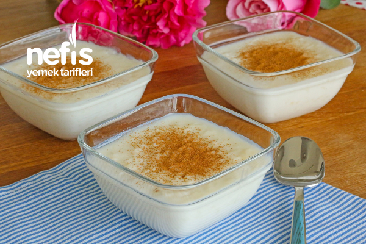

Sütlaç Recipe
Home Page

Description
Rice pudding, which you can consume hot or cold, is a type of dessert you can choose both in summer and winter.
Ingredients
- 1 liter of milk
- 2 tea glasses of rice
- 1 liter of water
- 3 tablespoons rice flour
- 1.5 -2 cups of granulated sugar
- 1 glass of milk
- cinnamon
Steps
- To make rice pudding, first wash the rice and put it on the fire with water.
- Boil until the rice stretches and absorbs the water. Be careful not to burn the rice by turning the stove on too high a heat.
- Then add cold milk. Stir it 1-2 times and wait for it to boil.
- Meanwhile, in a bowl, crush the rice flour with 1 glass of cold milk. Make sure that there are no lumps left.
- Take 1-2 scoops of boiling milk in the pot and add it to the bowl. (rice flour should be warm).
- Add the rice flour to the pot and cook for 10 minutes, stirring occasionally.
- Add granulated sugar, mix and boil for 1-2 more minutes.
- Divide the rice pudding into bowls.
- When the rice pudding has cooled, you can serve it by sprinkling cinnamon on it. Enjoy your meal.